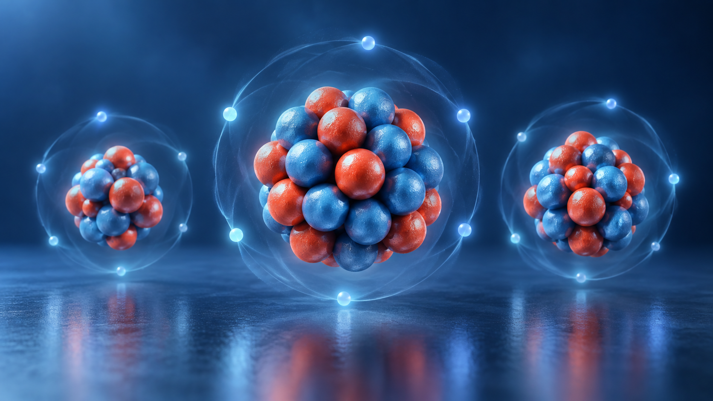
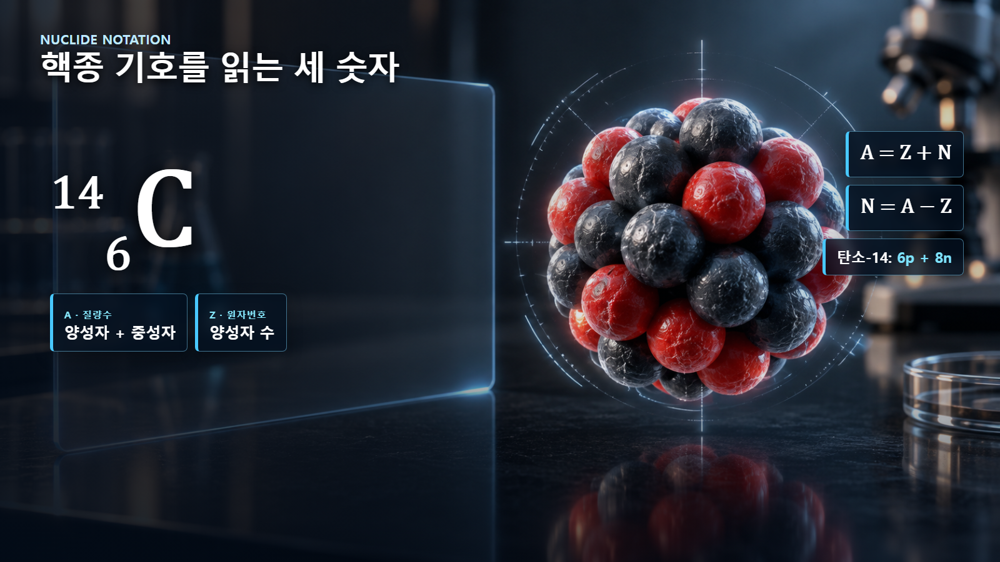
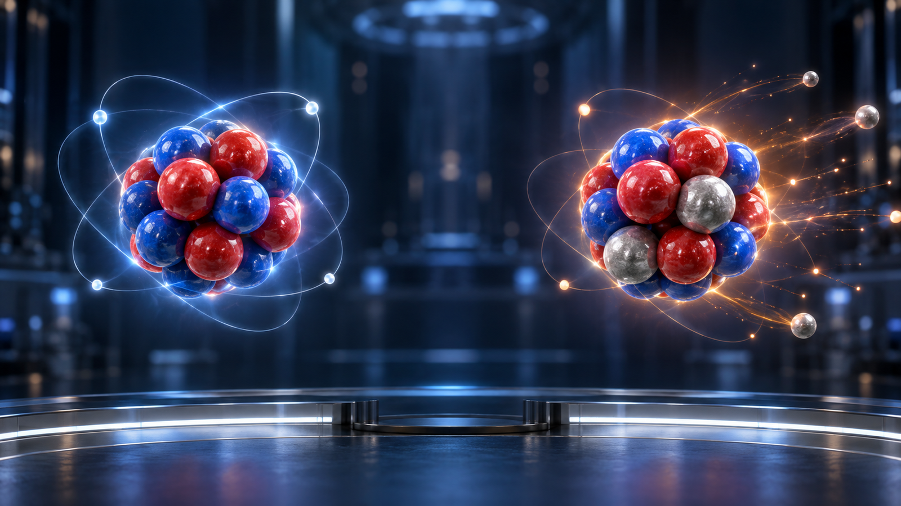

원자와 원자핵의 기초 · 004
원자번호와 질량수
핵종의 정체성을 읽는 세 숫자 Z·A·N

핵심 개념
원자번호 Z는 양성자 수, 질량수 A는 양성자와 중성자의 합, 중성자수 N은 A−Z입니다.
원소를 결정하는 원자번호
원자번호 Z는 핵 속 양성자 수입니다. Z=1은 수소, Z=6은 탄소, Z=92는 우라늄입니다. 중성 원자에서 전자 수도 Z와 같지만 이온에서는 달라지므로, 원자번호는 항상 양성자 수로 정의합니다.

핵자의 합을 나타내는 질량수
양성자와 중성자를 합쳐 핵자라고 합니다. 질량수 A는 원자핵 안의 전체 핵자 수이며 A=Z+N입니다. 질량수는 실제 원자질량의 소수값이 아니라 핵자를 세어 얻는 정수입니다.
| 핵종 | Z·양성자 | A·질량수 | N=A−Z | 특징 |
|---|---|---|---|---|
| 탄소-12 | 6 | 12 | 6 | 안정 동위원소 |
| 탄소-14 | 6 | 14 | 8 | 방사성 동위원소 |
| 우라늄-235 | 92 | 235 | 143 | 핵분열성 동위원소 |
핵종 기호의 해석
탄소-14는 ¹⁴₆C로 쓸 수 있습니다. A=14와 Z=6을 읽고 N=A−Z를 적용하면 중성자수는 8입니다. 같은 Z를 가지면서 A가 다른 원자들이 동위원소입니다.

숫자를 읽는 순서
핵종 기호에서는 원소기호와 Z로 양성자 수를 확인하고, A에서 Z를 빼 중성자수를 계산합니다. 전하 표시가 있다면 전자 수는 따로 판단합니다. Z는 원소의 주소, A는 핵자의 총인원, N은 그중 중성자의 수라고 기억하면 혼동을 줄일 수 있습니다.